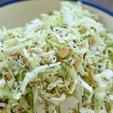

Ramen and Cabbage Salad

Description:
An Asian-inspired salad with a unique blend of textures and flavors
Ingredients:
- 2 (3 ounce) packages ramen noodles, crushed
- 1 cup blanched slivered almonds
- 2 teaspoons sesame seeds
- 1/2 cup butter, melted
- 3/4 cup vegetable oil
- 1/2 cup white sugar
- 1/4 cup distilled white vinegar
- 2 tablespoons soy sauce
- 1 head napa cabbage, shredded
- 1 bunch green onions, chopped
Steps:
- Brown ramen noodles, almonds, and sesame seeds with melted butter in a medium skillet over low heat. Once browned, take off heat and cool.
- Bring oil, sugar, and vinegar to a boil in a small saucepan for 1 minute. Cool. Add soy sauce.
- Combine cabbage and green onions in a large bowl. Add noodle mixture and soy sauce mixture. Toss to coat and serve.